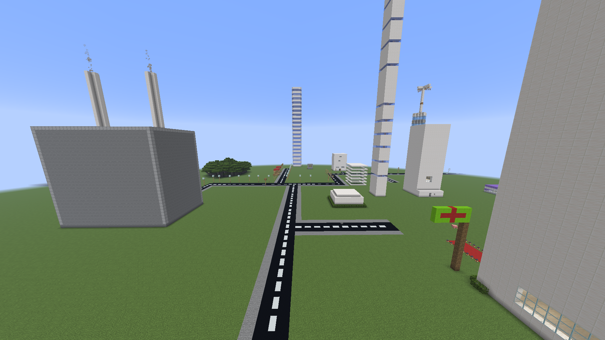

🚀 Welcome to Xland Hub 5.1
Xland Hub 5.1 has officially arrived.
After the major expansion introduced in Xland Hub 5.0, version 5.1 focuses on improving the connection between different parts of the Xland ecosystem.
This release introduces a new direct connection to Xland AI and a redesigned Xland News experience while continuing to improve the visual and mobile experience of the platform.
🔥 What's New in Xland Hub 5.1
Xland Hub 5.1 is focused on connecting the existing Xland ecosystem together while improving the overall experience of using Xland Hub.
🚀 Xland Hub 5.1 Highlights
- 🤖 Xland AI direct access
- 📰 Completely redesigned Xland News
- ✨ New News visual experience
- 🌌 Animated News background
- 💎 Glass-style News cards
- 🧭 Timeline-style News layout
- ⚡ Smoother animations
- 📱 Improved mobile experience
- ♿ Reduced-motion support
- 🛠️ Continued Support 5.1 improvements
- 🌐 Continued Xland ecosystem expansion
🤖 Xland AI Integration
One of the most important additions in Xland Hub 5.1 is a direct connection to Xland AI.
Xland AI is part of the growing Xland ecosystem and is designed to provide an AI experience connected to the Xland project.
🤖 Xland AI
- 🤖 Direct Xland AI access
- 🌐 Connected through Xland Hub
- 💬 AI chat experience
- 🧠 Xland AI ecosystem integration
- ⚡ Fast access from the Xland Hub interface
- 🔗 Direct connection to the Xland AI web experience
Instead of requiring users to search for Xland AI, Xland Hub now provides a dedicated floating access button directly from the Home experience.
🚀 One-Click Xland AI Access
Xland Hub 5.1 introduces a dedicated floating Xland AI button on the Home page.
The button remains visible while browsing the Home page and provides direct access to the Xland AI web experience.
🤖 Xland AI Button
- 🤖 Dedicated AI icon
- 📍 Floating Home-page position
- ✨ Hover animation
- 🏷️ XLAND AI tooltip
- ⚡ One-click access
- 🌐 Opens Xland AI Web
- 📱 Mobile-friendly positioning
📰 Xland News Redesign
Another major part of Xland Hub 5.1 is the complete visual redesign of the Xland News experience.
The News section has been redesigned to feel more like a modern Xland platform instead of a traditional list of announcements.
📰 New Xland News Experience
- 🌌 Animated background
- 💎 Glassmorphism cards
- ✨ Neon glow effects
- 🧭 Timeline-style layout
- 🎨 Improved typography
- ⚡ Smoother transitions
- 📱 Better mobile layout
- 🚀 Improved visual hierarchy
🧭 New News Timeline
Xland News now uses a timeline-inspired structure to make different updates easier to follow.
The new structure helps separate different Xland releases, announcements and development updates while giving the News section a stronger visual identity.
📰 Timeline Features
- 📅 Organized updates
- 🔵 Timeline indicators
- 🧭 Clear update progression
- 🚀 Better navigation between news items
- ✨ Animated visual elements
- 📱 Responsive timeline layout
💎 New Xland News Visual System
The redesigned News section continues the Neon and Glass visual language used throughout Xland Hub.
✨ Visual Improvements
- 💎 Glass panels
- 🌌 Animated grid background
- ✨ Soft neon glow
- 🪟 Transparent UI elements
- ⚡ Smooth hover effects
- 🎞️ Entry animations
- 🎨 Improved spacing
- 📐 Better content hierarchy
⚡ Smoother Animations
Xland Hub 5.1 also improves the motion and transition experience across the redesigned News interface.
⚡ Animation Improvements
- ✨ Smooth card animations
- 🪄 Hover transitions
- 🌌 Background motion
- 🚀 Timeline animations
- 🎞️ Smooth page entry effects
- 🧭 Better visual transitions
♿ Reduced Motion Support
The redesigned News experience also includes support for users who prefer reduced motion.
When reduced-motion preferences are enabled on the device, unnecessary animations can be reduced to create a calmer browsing experience.
♿ Accessibility Improvement
- ♿ Reduced-motion support
- 🖥️ System preference detection
- ✨ Reduced unnecessary animation
- 📱 Better accessibility experience
🛠️ Xland Support 5.1
The Xland Support system continues as one of the major parts of the Xland ecosystem.
Support provides a dedicated environment for questions, suggestions, bug reports and support tickets.
🛡️ Support Center
- 🛠️ Support Categories
- 📚 FAQ System
- 🎫 Ticket Center
- 🐛 Bug Reports
- 💡 Suggestions
- 🎮 Game Support
- 🌐 Website Support
- 👤 Account Support
- 💾 Local Ticket Storage
🎫 Xland Ticket Center
The ticket system allows users to create and track support requests directly from the Support Center.
🎫 Ticket Features
- 🆔 Automatic Ticket IDs
- 📂 Open Tickets
- ⏳ Pending Tickets
- ✅ Solved Tickets
- 📊 Ticket Statistics
- 💾 LocalStorage support
📥 Xland Download Center
The Download Center continues to provide a dedicated location for Xland games and downloadable content.
📦 Download Features
- 🎮 Game versions
- 📦 File size information
- 📅 Version information
- 📥 Direct downloads
- 🔗 External download support
🎮 Xland Games
Xland Hub continues to expand its game ecosystem with existing projects and future development.
🎮 Xland Projects
- 🎮 Xland Game
- 👻 Endless Road Horror 3D
- 🎮 Future Xland Games
- 🛠️ Experimental Projects
💻 Developer Ecosystem
Xland Hub continues supporting developers with tools and services connected to the Xland ecosystem.
💻 Developer Resources
- 📜 Xland Script
- 🌐 Xland API
- 💻 Developer Tools
- 🧪 Experimental Projects
- 📚 Development Resources
📰 Xland News System
The News system remains the central location for Xland announcements, development updates and important releases.
📰 News Features
- 🚀 Product announcements
- 🎮 Game updates
- 💻 Developer updates
- 🌎 Ecosystem news
- 📢 Important announcements
- 🧭 Timeline-based presentation
📱 Improved Mobile Experience
Xland Hub 5.1 continues improving the experience across different screen sizes, especially within the redesigned News section.
📱 Responsive Support
- 📱 Mobile phones
- 📟 Tablets
- 💻 Desktop
- 🔄 Flexible layouts
- 📰 Responsive News cards
- 🧭 Mobile navigation
- 🤖 Mobile-friendly AI button
💎 The Xland Visual Experience
Xland Hub 5.1 continues the Neon / Glass design language used throughout the platform.
✨ Visual Improvements
- 💎 Glass panels
- ✨ Neon borders
- 🌌 Dark interface
- ⚡ Hover animations
- 🎞️ Smooth transitions
- 📱 Responsive components
- 🎨 Improved typography
🌎 The Growing Xland Ecosystem
Xland Hub 5.1 continues the transformation of Xland from a collection of individual projects into a connected ecosystem.
🌐 Xland Ecosystem
- 🤖 Xland AI
- 🎮 Xland Games
- 🌎 Xland Maps
- 🎬 Xland Video
- 📰 Xland News
- 🛠️ Xland Support
- 💻 Xland Developer Tools
- 🌐 Xland API
- 📜 Xland Script
- 🛒 Xland Shop
The goal is to keep bringing these projects closer together under the Xland Hub platform.
🔮 What's Next?
Xland Hub 5.1 is another step in the development of the Xland ecosystem.
Future versions may continue expanding the platform with new experiences, tools, games, services and ecosystem features.
🚀 Future Possibilities
- 🎮 More Xland games
- 🌎 More maps
- 🎬 More videos
- 📰 More news
- 💻 More developer tools
- 🌐 More API services
- 🛒 More shop features
- 🛠️ Better support systems
- 🤖 Further Xland AI development
- ✨ More interactive website features
🎉 Xland Hub 5.1 Is Here
Xland Hub 5.1 represents another important stage in the development of the Xland website and ecosystem.
From direct Xland AI access and the redesigned Xland News experience to improved animations, mobile support and continued ecosystem development, Xland Hub continues to grow.
Version 5.1 is not about simply adding more pages. It is about making the existing Xland ecosystem feel more connected.
📸 Gallery



📰 Related News

👤 Written by
Xland Team
Official developers of the Xland ecosystem.
💬 Comments (0)